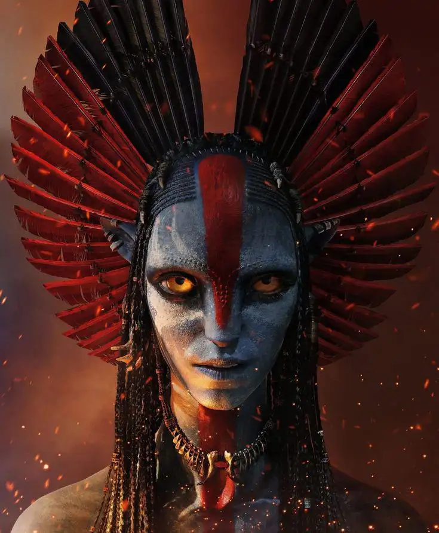
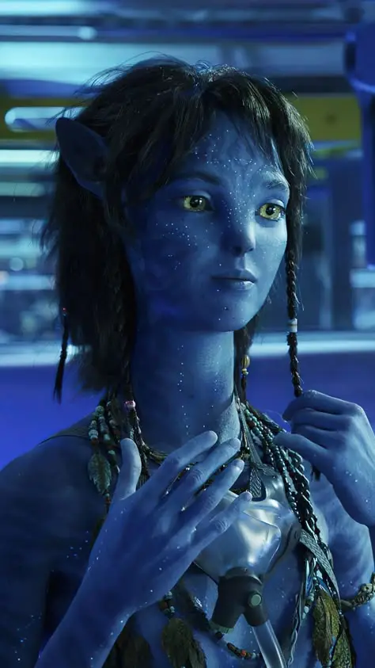
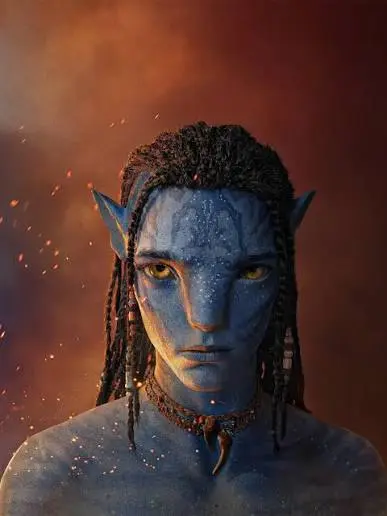
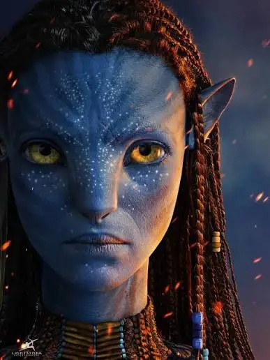
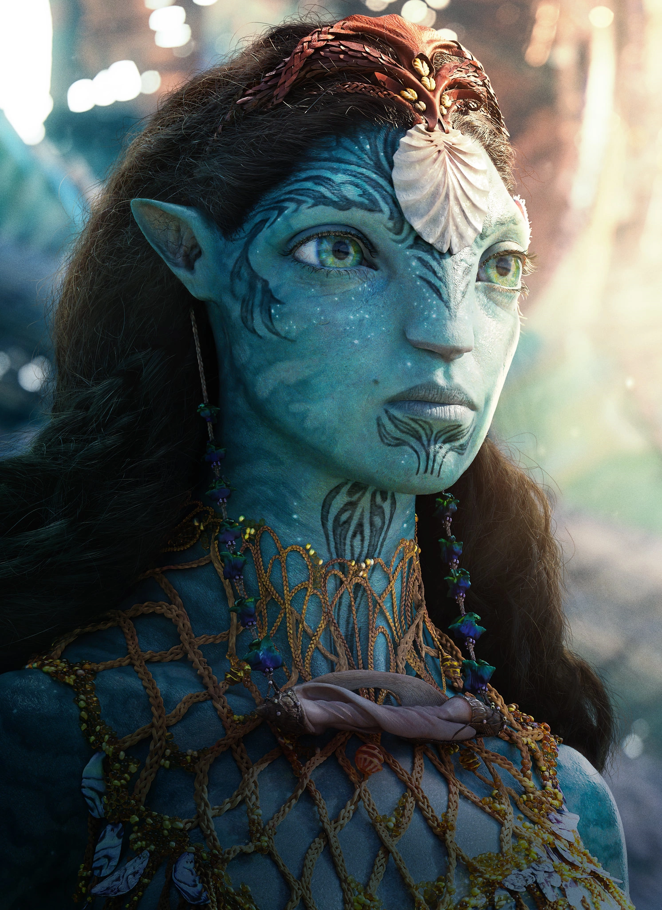

Personajes y sus actores:
-

Jake Sully: Interpretado por Sam Worthington. En esta entrega encabeza a su familia mientras intenta mantenerlos a salvo y lidiar con el profundo dolor y la culpa tras la pérdida sufrida.
-

Varang: Interpretado por Oona Chaplin. Líder de los Mangkwan (el Pueblo de las Cenizas), una mujer despiadada y calculadora.
-

Kiri: Interpretada por Sigourney Weaver. La hija adoptiva de Jake y Neytiri. Posee una conexión espiritual única y profunda con Pandora.
-

Loak: Interpretado por Britain Dalton. Segundo hijo de Jake Sully y Neytiri. Rebelde, impulsivo y con un fuerte sentido de la lealtad.
-

Neytiri: Interpretada por Zoe Saldaña. Guerrera feroz Omaticaya, pareja de Jake, enfrenta fracturas emocionales profundas.
-

Ronal: Interpretada por Kate Winslet. Líder espiritual y chamán del clan acuático Metkayina, experta en la sanación.